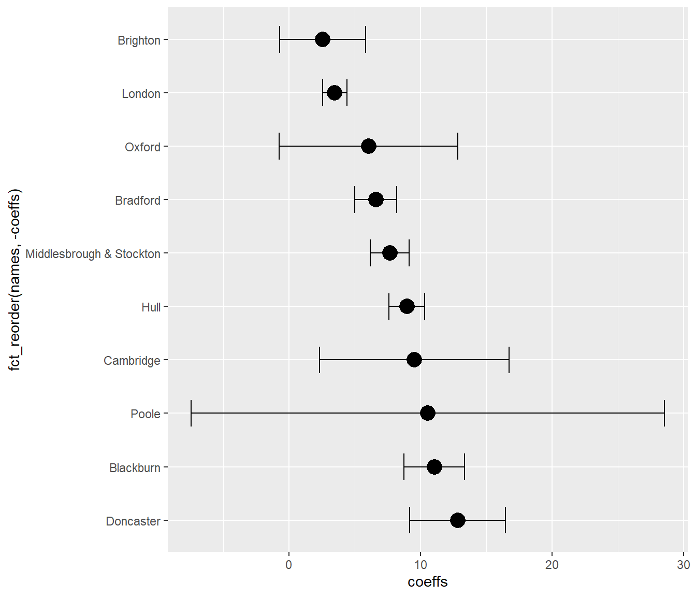
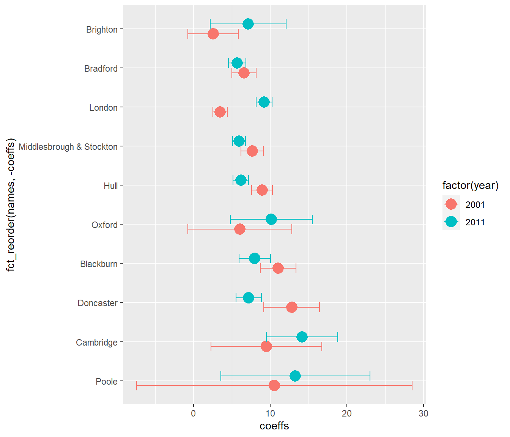

20 Iteration
20.1 1. Outputting multiple plots
It’s often useful to be able to look at many different elements of your data in their own separate plots - for example, looking at each city/town or local authority separately. This isn’t often the kind of task you might need for presenting data - but as a way to understand your own data, being able to output many plots easily is really useful.
One option is to use a for-loop to do this. This will allow us to loop over each plot we want and output them separately.
What we’ll do here: cut up the local authorities from the work done in the joining-data section into equal size groups and plot each of the groups.
We can work with the list of local authorities in price_n_wage2018. As usual, the tidyverse supplies a feature for cutting numeric data up in various ways.
If you haven’t still got price_n_wage and price_n_wage2018 in memory from the join section, here’s the price_n_wage dataframe with code for re-grabbing just 2018.
#reload price_n_wage data we previously made
#if it's been over-written with anything or removed
price_n_wage <- readRDS('data/price_n_wage_fromjoinsection.rds')
price_n_wage2018 <- price_n_wage %>%
filter(year == 2018) %>%
arrange(-wagemultiple)So how to cut up the local authority data into equal size groups? Here’s code that does that in two forms: the first is base R, the second uses the pipe operator in dplyr - just to compare legibility between the two.
There’s very useful auto-help for the cut functions: if you just type cut_, this should appear. Each of the three cut functions is explained. cut_number will create a column marking out which rows for wagemultiple are in each group:
#Base R version
price_n_wage2018$groupToPrint <- as.numeric(cut_number(price_n_wage2018$wagemultiple,8))
#dplyr piping version, same result
price_n_wage2018 <- price_n_wage2018 %>%
mutate(groupToPrint = wagemultiple %>%
cut_number(8) %>%
as.numeric
)Note: the cut functions are not cutting according to row - it’s done according to value. That’s why group number one is lowest-value local authorities and eight the highest.
Get a list of the unique values we’re going to iterate over. This could be a vector of character names like place-names - it wouldn’t have to be numeric.
groupsToPrint <- unique(price_n_wage2018$groupToPrint)
groupsToPrint## [1] 8 7 6 5 4 3 2 1Now we’re going to loop over those eight groups and produce a plot for each.
If you’ve not come across for-loops before, they’re straightforward. Translated to English, for-loops are just: ‘for each of this set of values (in our case, it’ll be our eight groups), carry out this bunch of tasks, once per value’.
That vector can now be used in the for loop. Set up the for loop first just to see what it’s doing:
for(grp in groupsToPrint){
print(grp)
}The for-loop assigns each value from groupsToPrint to the grp variable in turn. It then executes the code between the curly braces. In this case, we’re just printing the grp number - but the principle is the same for whatever code we put between them. We just need to replace print(grp) with our code.
The first job for the loop: pull out the list of local authorities to print on each iteration. We filter by group and then pull out the single vector of local authorities in the Area variable (we also use print here so the result is visible in the for loop):
for(grp in groupsToPrint){
#get vector of zones to draw
zoneselection <- price_n_wage2018 %>%
filter(groupToPrint == grp) %>%
pull(Area)
print(zoneselection)
}A couple of things before starting:
We’ll add our plots to a sub-folder in the images folder. Make that now with RStudio’s ‘new folder’ option in the file tab, inside the images folder: something like groupsOfLocalAuthorities.
It’s tricky trying to debug code that’s running inside a for loop. A useful thing to do is: pick one value to assign to grp so that we can then run the code by highlighting, without having to run the whole for loop. For example:
grp <- 1When we run the actual for loop, it will overwrite this with the value it assigns. But we can work with it while getting the code right.
There’s nothing much new in the code below: this is just our previous wage multiple plot code, working on each group in turn. The only other thing to note:
At the bottom, we’re making a filename that includes the first and last local authority names in the group (as well as the group name). This is done with the paste0 function. Paste0 just takes in a bunch of bits of text and variables, separated by commas, and turns them into one character. This allows us to save each group as its own file.
There is also an added geom_point showing the median wage itself.
for(grp in groupsToPrint){
print(paste0('outputting group ',grp))
#get vector of zones to draw
zoneselection <- price_n_wage2018 %>%
filter(groupToPrint == grp) %>%
pull(Area)
output <- ggplot(price_n_wage %>% filter(Area %in% zoneselection),
aes(x = year, y = wagemultiple, colour = fct_reorder(Area,-wagemultiple))) +
geom_point(aes(size = medianwage), alpha = 0.2) +
scale_size_continuous(range = c(0,10)) +
geom_line(size = 0.75) +
labs(colour = 'area')
#save the plot
#text of zones
zonetext <- paste0(zoneselection[1],'_to_',zoneselection[length(zoneselection)])
filename <- paste0('images/groupsOfLocalAuthorities/group_',grp,'_',zonetext,'.png')
ggsave(filename, output, dpi = 300, width = 9, height = 5)
}20.2 2. Pulling out multiple model values and visualising them
This section is inspired by code from the excellent book R for Data Science and the section on mapping with the purrr library (another one that comes packaged with the tidyverse library).
Academic papers are still full of endless regression tables. They are not very aesthetically pleasing. Another option is to visualise your model’s findings in some way.
This section gives an example - it has little statistical merit but illustrates the basic idea:
If you’re running any kind of model on multiple subsets of data, how can you pull out the results of interest and visualise them? How do you also show error?
ggplot has a number of geometries specifically for showing ranges - as well as showing error, these can be used for e.g. showing mins and maxes. You must set the values for these yourself
The basic principle here is simple: pull out all of the results you want into a dataframe, then apply your dplyr and ggplot knowledge to visualise it and create error values
We’d expect employment and house prices to have a positive relationship but what’s the magnitude of the relationship, how much does it vary between places and has it changed over time?
To look at this, we’ll combine house price data with employment data so that we have these in their own columns:
- Average house price per ward for a range of TTWAs, for 2001 and 2011
- Percent of employed people in those wards for 2001 and 2011
We’ll look at the same house price data, but this version is subsetted to:
2001 and 2011 so we can compare to employment data from the Censuses in those years. Only TTWAs that have wards with 30 or more sales in each time period.
If you like, there’s the option of skipping ahead a few steps and just loading the pre-prepared data for the regressions. Otherwise, let’s start by loading another subset of the sales data:
sales <- readRDS('data/sales2001and2011wardsWithMoreThan30sales.rds')
#Note it's already got year in
names(sales)## [1] "price" "date" "postcode"
## [4] "type" "Eastings" "Northings"
## [7] "wardcode" "ttwa" "ttwa_code"
## [10] "localauthority" "localauthoritycode" "year"And this is the employment data: the columns 2001 and 2011 contain the percent of economically active people in employment in that ward.
employment <- read_csv('data/percentEmployedByWard2001n2011.csv')Now, as before, the job is just to:
- summarise the housing data: average price per ward and per year - with the added detail that we want to keep the TTWA name these wards are in.
- Join this summary with the employment data, linking on year and ward.
Notice the trick used in summarise here to keep the TTWA name in the summary: using max(ttwa). What does this do? In short: it’s a way of easily grabbing a column we want in our summary, if we know there’s a single value per group. (The sales dataframe has already had its wards set to only be in one TTWA.)
#Average price per ward per year
priceSummary <- sales %>%
group_by(year,wardcode) %>%
summarise(meanprice = mean(price), count =n(), ttwa =max(ttwa))## `summarise()` has grouped output by 'year'. You can override using the `.groups` argument.#p.s. if we wanted to find the modal ttwa, we could use this.
#ttwa = names(which.max(table(ttwa))As the employment data has one column for each year, this has to be made into long-form. The two can then be joined using inner_join again to keep only wards common to both:
empLong <- employment %>%
gather(key = year, value = percentEmployed, `2001`:`2011`) %>%
mutate(year = as.numeric(year))
avpriceplusemp <- inner_join(priceSummary,empLong,
by = c('year','wardcode'))
#count of wards per ttwa / year
table(avpriceplusemp$ttwa, avpriceplusemp$year)##
## 2001 2011
## Blackburn 50 50
## Bradford 32 32
## Brighton 54 54
## Cambridge 67 67
## Doncaster 21 21
## Hull 61 61
## London 926 926
## Middlesbrough & Stockton 71 71
## Oxford 66 66
## Poole 24 24Here’s the pre-prepared and joined price and employment data, if you skipped the last chunk:
avpriceplusemp <- readRDS('data/avpriceplusemp.rds')So: the aim is to do a regression of house price on employment for each TTWA, using its wards as data points. Before attempting multiple regressions, though, let’s work through a single regression to see what needs to happen.
We’ll be using log of house price as the dependent variable and using this to tell us about percentage change. And we’ll even use R’s base plotting function to quickly look at it.
#test a single regression, look at plot.
#Pull out a single year and TTWA
testinz <- avpriceplusemp %>% filter(year == 2001, ttwa == 'Bradford')
#run the regression and look at a summary - log of house price as
rez <- lm(data = testinz, formula = log(meanprice) ~ percentEmployed)
summary(rez)##
## Call:
## lm(formula = log(meanprice) ~ percentEmployed, data = testinz)
##
## Residuals:
## Min 1Q Median 3Q Max
## -0.27890 -0.16621 0.02439 0.13770 0.31521
##
## Coefficients:
## Estimate Std. Error t value Pr(>|t|)
## (Intercept) 4.804860 0.760030 6.322 5.69e-07 ***
## percentEmployed 0.066004 0.008179 8.070 5.22e-09 ***
## ---
## Signif. codes: 0 '***' 0.001 '**' 0.01 '*' 0.05 '.' 0.1 ' ' 1
##
## Residual standard error: 0.1921 on 30 degrees of freedom
## Multiple R-squared: 0.6846, Adjusted R-squared: 0.6741
## F-statistic: 65.13 on 1 and 30 DF, p-value: 5.223e-09#Look at the data and the estimated regression line
plot(log(testinz$meanprice) ~ testinz$percentEmployed)
abline(rez)
In Bradford in 2001, an employment increase of 1% was associated with a house price increase of about 6.6%.
But how to get the coefficients out of the ugly table and into a lovely graph? You’ll have to work this out for whatever model type you use, but for lm it looks like this. Read the comments…
#Get a model summary object
rezsummary <- summary(rez)
#Some things like R-squared are easily accessible...
rezsummary$r.squared## [1] 0.6846464#But we want the slope coefficient and standard error.
#Coefficients are stored in a matrix...
rezsummary$coefficients## Estimate Std. Error t value Pr(>|t|)
## (Intercept) 4.80485956 0.760030304 6.321932 5.690004e-07
## percentEmployed 0.06600402 0.008178535 8.070397 5.223239e-09#... so we just reference using row and column position to get them:
rezsummary$coefficients[2,1] # coefficient for employment ## [1] 0.06600402rezsummary$coefficients[2,2] # standard error## [1] 0.008178535Now we know where to find the coefficients and standard errors all that needs to happen is: find a way to repeatedly run the model for each TTWA.
We’ve already used a for loop to iterate over a process. R has a few other methods for iterating over groups of objects - and again the tidyverse provides a really neat version: the map function from the purrr library.
Since we’ve already used summarise, this is a good way to think about how map works. The notation is lengthy to explain - check the R for data science book if you want to know more. But this allows us to pull out the price means from each TTWA into a variable (of `double’ format, i.e. can have good decimal precision).
Note: split is a base-R function that splits a dataframe into a bunch of dataframes, based on the category passed in. So this is splitting the sales dataframe into smaller ones for each TTWA.
The purrr library should be already loaded as part of the tidyverse library.
x <- sales %>%
split(.$ttwa) %>%
map_dbl(~mean(.$price))
x## Blackburn Bradford Brighton
## 74787.08 78759.26 186405.66
## Cambridge Doncaster Hull
## 189188.19 76228.50 85228.74
## London Middlesbrough & Stockton Oxford
## 277824.28 89690.92 208710.30
## Poole
## 189531.80The notation used makes it very easy to create tidy iterations. And here, we can break down the process of running many models and pulling out the numbers of interest using exactly the same approach we just used to get those means. First, running a linear model on each TTWA for 2001. Note we combine map with the dplyr filter verb.
models <- avpriceplusemp %>%
filter(year == 2001) %>%
split(.$ttwa) %>%
map(~lm(log(meanprice) ~ percentEmployed, data = .))And to check we can now use those models to access the coefficients in the way we previously worked out:
models %>%
map(summary) %>%
map_dbl(~.$coefficients[2,1])## Blackburn Bradford Brighton
## 0.11050658 0.06600402 0.02570804
## Cambridge Doncaster Hull
## 0.09532273 0.12828774 0.08965422
## London Middlesbrough & Stockton Oxford
## 0.03491091 0.07675510 0.06060024
## Poole
## 0.10562224Tick! Great. Now what? Well, we can use this repeatedly to directly create a dataframe. So using the check code we just tested and two others, the following code does this:
- Creates a dataframe of coefficients and standard errors (and pulls out the TTWA names in the process)
- Uses mutate to multiply the coefficients by 100 to give percentages
- Then uses mutate again to create a 95% confidence interval using the standard error
alloutput <- data.frame(
names = models %>%
map(summary) %>%
map_dbl(~.$coefficients[2,1]) %>% names,
coeffs = models %>%
map(summary) %>%
map_dbl(~.$coefficients[2,1]),
se = models %>%
map(summary) %>%
map_dbl(~.$coefficients[2,2])
)
#Multiply by 100
alloutput <- alloutput %>%
mutate(
coeffs = coeffs * 100,
se = se * 100
)
#add in some min/max confidence intervals from standard error
alloutput <- alloutput %>%
mutate(
minn = coeffs - (se * 1.96),
maxx = coeffs + (se * 1.96)
)As always, take a look at the resulting dataframe. We’ve got everything we need to plot. But notice the new thing here:
geom_errorbar takes in values for ymin and ymax from the data: these geoms in ggplot are not doing any of their own stats - you need to supply the mins and maxes directly, which is why we calculated them. (This gives us a lot more flexibility about what we want to show.)
ggplot(alloutput, aes(x = fct_reorder(names,-coeffs), y = coeffs)) +
geom_point(size = 5) +
geom_errorbar(aes(ymin = minn, ymax = maxx), width = 0.5) +
coord_flip()
As a last exercise: how would you go about running the models for both decades and then comparing? The aim, as with all ggplots, would be to have year in its own column so it can be mapped to an aesthetic. You could also use dodge.
You could just re-run the code above, changing the year in filter to 2011. But another option is to turn the above code into a function. Doing this provides another way of iterating your code. Some points on functions:
- As we’ve already said, R is a functional language: everything is a function, and they can all be composed together in whatever way produces valid output.
- Functions are just input/output machines: you just need to tell it what goes in and what you want out.
A basic function might look like this. This is obviously a trivial example but the idea applies to anything more complex - the structure of writing one is exactly the same. Say we want to know: is a number divisible by two? (As if this isn’t obvious, but this illustrates the principle!)
isDivisibleByTwo <- function(x){
#Use R's modulus operator %% - gives the remainder from dividing by a number
result <- x %% 2
output <- ifelse(result == 0, TRUE, FALSE)
#We could also do this as the remainder from 2 is only 1 or 0
#and R interprets 1 and 0 as TRUE and FALSE
#return(!as.logical(x))
#By default, an R function will return the last created variable.
#Or you can tell it explicitly what to return like this.
return(output)
}You then need to highlight the whole code block and run it, as usual. Nothing will happen - except you’ll now see the function name in the environment panel.
Once that’s done, your new in-out machine should work:
isDivisibleByTwo(46)## [1] TRUEisDivisibleByTwo(127)## [1] FALSEThe principle of building functions is simple: where possible, put what doesn’t change into a function, pass what does change as arguments to the function. In this simple case, it’s our number we want dividing by two that changes. (Note: the name of the variable is arbitrary: whatever you pass in will be assigned to it.)
So: how would you apply this to the model-running code? Here are some ideas.
- The only thing that changes is the year: it’s either 2001 or 2011. Everything else can be the same as the code used above.
- All of this code could go inside the function:
- The first models <- avpriceplusemp code, where currently year is set to either 2001 or 2011. It’s here we’d use the value passed into the function.
- Then the code creating the alloutput dataframe. This is the thing we want the function to return.
There would also be nothing wrong with adding the extra year column in the function itself - but you would need that for creating a single year column that ggplot can use to map to an aesthetic.
Note: you can view a working version of this function in the file containing all the code, in the project folder, if you want to see how it’s put together to help write your own / cheat!
#Pass a year into the function, then add a column to mark the year.
model01 <- modelz(2001) %>% mutate(year = 2001)
model11 <- modelz(2011) %>% mutate(year = 2011)
#Both will be the same structure - combine the rows from both
bothmodels <- rbind(model01,model11)And with the addition of position = ‘dodge’ in geom_errorbar, this could be used to create the following. Note here we’re setting dodge spacing directly so we can control the point and error bar position to both match each other:

Again, the R for Data Science book has a lot more on functional programming - hopefully this gives a hint of its power.